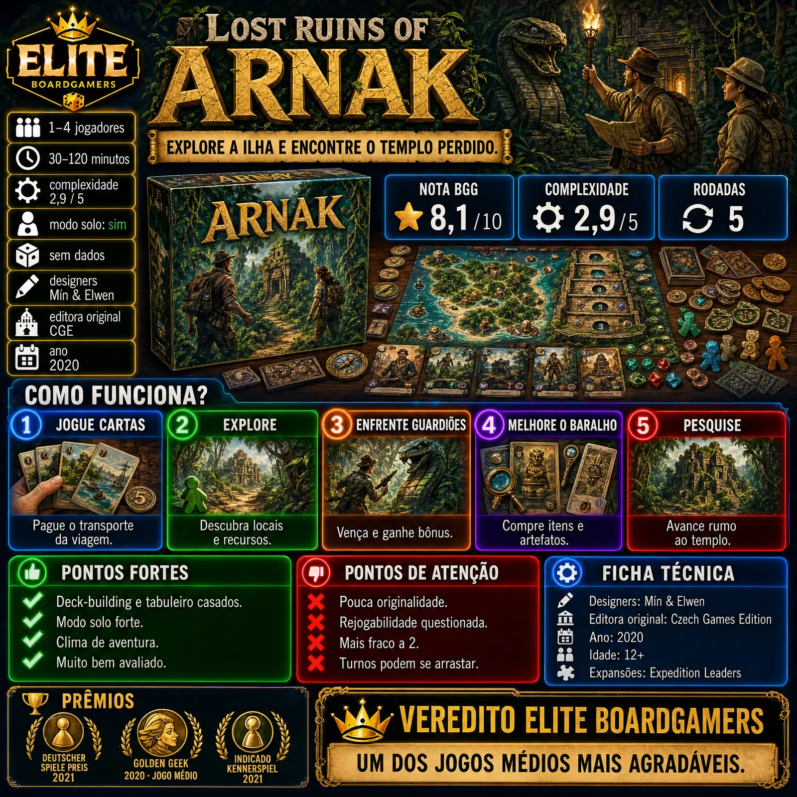

Lost Ruins of Arnak mistura construção de baralho com alocação de trabalhadores numa expedição a uma ilha perdida. Venceu o Deutscher Spiele Preis em 2021 e o Golden Geek de Jogo do Ano médio em 2020, e foi indicado ao Kennerspiel.

| Ano | 2020 |
|---|---|
| Designers | Mín & Elwen |
| Editora original | Czech Games Edition |
| Editora no Brasil | não confirmado nas fontes consultadas |
| Jogadores | 1 a 4 |
| Duração anunciada | 30 a 120 minutos (cerca de 30 minutos por jogador) |
| Idade | 12+ |
| Nota BGG | 8,1 / 10 (segundo listagem que cita o BGG) |
| Peso BGG | 2,88 a 2,93 / 5, conforme a fonte |
| Nota Ludopedia | não confirmado nas fontes consultadas |
| Modo solo oficial | Sim (com cartas de rival automatizado) |
| Expansões | Expedition Leaders, The Missing Expedition |
Nota e peso do BGG obtidos por busca. O ranking geral foi omitido.
Cada jogador começa com um pequeno baralho. Na sua vez, você joga cartas para viajar e mandar seus exploradores a locais da ilha, pagando o transporte indicado (botas, barcos, aviões).
Explorar sítios novos revela guardiões que precisam ser vencidos e dá recursos: moedas, bússolas, tabuletas, pontas de flecha e joias. Com eles você compra itens e artefatos que entram no seu baralho.
Ao mesmo tempo, você avança na trilha de pesquisa rumo ao templo perdido. Depois de cinco rodadas, vence quem tiver mais pontos de pesquisa, templo, cartas, guardiões e ídolos.
Deck-building e alocação de trabalhadores se completam; um crítico citado pela There Will Be Games chamou o jogo de sucessor do clássico Tikal.
O rival automatizado bloqueia espaços e pontua junto com você, o que um dos críticos considerou um ponto alto.
A ilha, os guardiões e o templo dão clima de expedição a cada partida.
A Meeple Like Us resume: é ótimo.
Críticos apontam que o jogo junta mecânicas conhecidas da era pós-Dominion sem trazer nada realmente novo.
Um crítico achou que não demora para ver tudo o que o jogo oferece.
Uma das resenhas considera a partida a 2 a mais fraca entre as contagens de jogadores.
Comentários de jogadores relatam espera entre turnos e uma trilha de pesquisa pouco interessante.
Lost Ruins of Arnak junta deck-building e alocação de trabalhadores de um jeito redondo, com tema de aventura e um bom modo solo. Não inventa nada novo e a 2 perde um pouco, mas é um dos jogos médios mais agradáveis da sua geração.
Uma expedição de cartas rumo ao templo perdido.